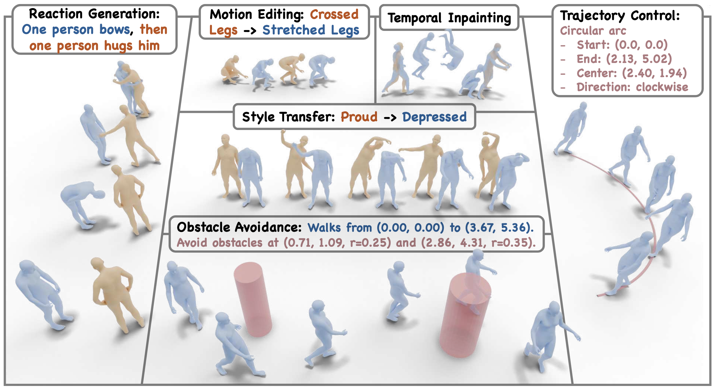
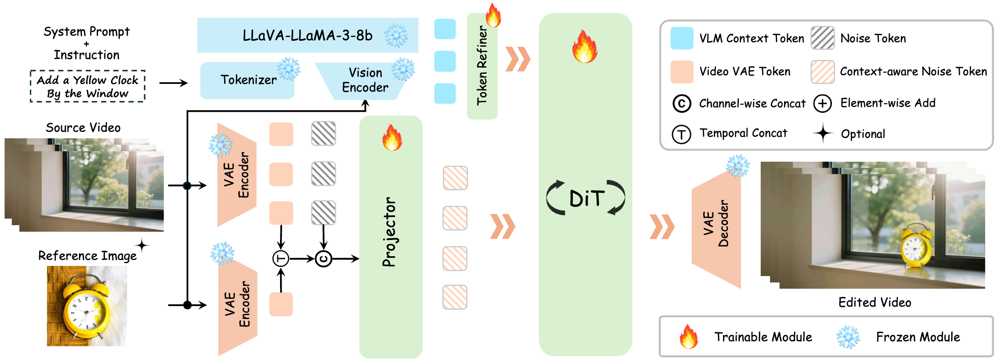
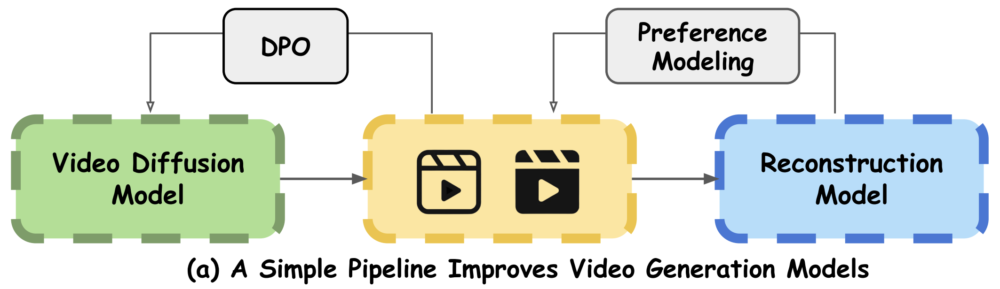
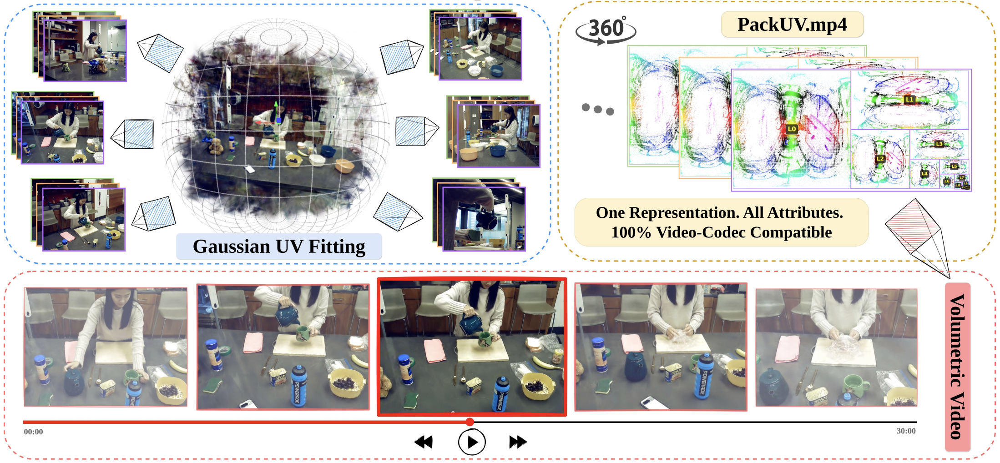
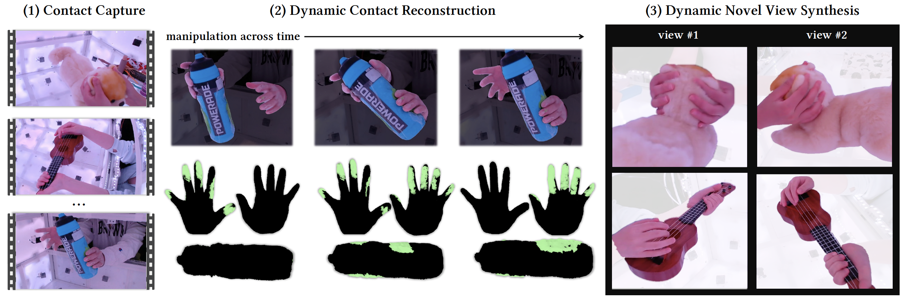
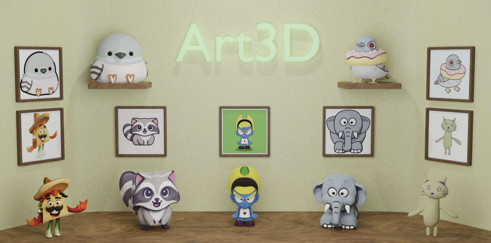
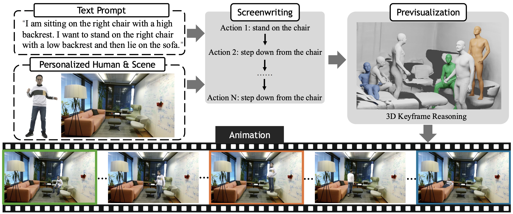
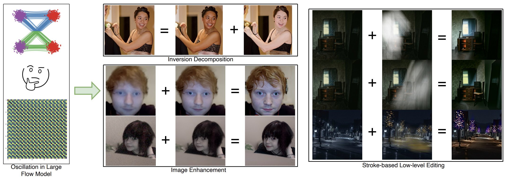
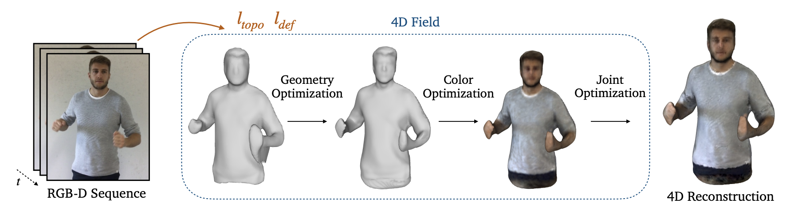

Email: xiaoyan_cong [at] brown [dot] edu
Office: 115 Waterman St, Providence, RI 02906
I am currently a 2nd-year CS Ph.D. student at Brown University, advised by Prof. Srinath Sridhar. I obtained my B.E. of Robotics Engineering from Zhejiang University with honors from Cho Kochen Honors College in 2024. During my undergraduate, I am grateful to be advised by Prof. Qixing Huang, Prof. Li Yi, Prof. Qifeng Chen, Prof. Xiaowei Zhou.
I'm always open to collaboration -- please contact me without hesitation!
My research centers on multimodal foundation models for content creation across images, video, motion, and language. I am also broadly interested in world models and 3D/4D representations.

TL;DR We propose a unified formulation that unlocks the generative priors of a text-to-motion foundation model for diverse downstream tasks.


TL;DR We propose an RL post-training framework that aligns video diffusion models toward 3D geometric consistency via DPO.


TL;DR Markerless capture of dynamic hand-object contacts with deformable Gaussians.

TL;DR We propose a training-free solution for reconstructing geometry from flat-colored images.


TL;DR Exploits oscillatory patterns in the inversion of flow models for training-free image and video enhancement.

{kind=link}